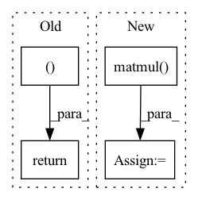

Pattern ID :1385
Before Change
// returing:
// GPT2Model/Block[2]/MLP[mlp]/Dropout[dropout]
// GPT2Model/Block[2]/aten::add5567
return (self.l_29(self.l_28(torch.mul(input=torch.mul(input=t_33, other=0.5), other=torch.add(input=Tensor.tanh(torch.mul(input=torch.add(input=t_33, other=torch.mul(input=Tensor.pow(t_33, exponent=3), other=0.044715)), other=0.7978845608028654)), other=1)))), t_32 )
def state_dict(self,device=None):
// we return the state dict of this part as it should be in the original modelAfter Change
t_41 = self.b_3[0:9223372036854775807:1][:, 0:9223372036854775807:1][:, :, torch.sub(input=t_40, other=Tensor.size(t_39, dim=-2)):t_40:1][:, :, :, 0:t_40:1]
// calling Tensor.contiguous with arguments:
// GPT2LMHeadModel/GPT2Model[transformer]/Block[3]/Attention[attn]/aten::permute5905
t_42 = Tensor.contiguous(Tensor.permute(Tensor.matmul( self.l_32(Tensor.softmax(torch.sub(input=torch.mul(input=t_39, other=t_41), other=torch.mul(input=torch.rsub(t_41, other=1, alpha=1), other=10000.0)), dim=-1, dtype=None)), other=Tensor.permute(Tensor.view(t_38, size=[Tensor.size(t_38, dim=0), Tensor.size(t_38, dim=1), 12, torch.div(input=Tensor.size(t_38, dim=-1), other=12)]), dims=[0, 2, 1, 3])) , dims=[0, 2, 1, 3]))
// calling torch.add with arguments:
// GPT2LMHeadModel/GPT2Model[transformer]/Block[2]/aten::add5739
// GPT2LMHeadModel/GPT2Model[transformer]/Block[3]/Attention[attn]/Dropout[resid_dropout]In pattern: SUPERPATTERN
Frequency: 3
Non-data size: 4
Instances Fragment ID: 4767811
Project Name: saareliad/ftpipe
Commit Name: 9ddf98456ca57cac3a4a982fc519c5a71642dc25
Time: 2020-03-10
Author: saareliad@campus.technion.ac.il
File Name: models/partitioned/gpt2.py
M Class Name: Partition0
N Class Name: Partition0
M Method Name: forward(2)
N Method Name: forward(2)
M Parent Class: nn.Module
N Parent Class: nn.Module
M File Name: models/partitioned/gpt2.py
N File Name: models/partitioned/gpt2.py
M Start Line: 460
M End Line: 467
N Start Line: 396
N End Line: 430
Before Change
// output = torch.matmul(attention_weights, v)
// return output, attention_weights
return v, attention_weights
class MultiHeadAttention(torch.nn.Module):
def __init__(self, d_model_size, num_heads, output_attentions=False):After Change
scaled_attention_logits += mask[ns - nd: ns, :ns] * -1e4
attention_weights = torch.softmax(scaled_attention_logits, dim=-1)
scaled_attention = torch.matmul( attention_weights, v)
return scaled_attention
Fragment ID: 4767813
Project Name: saareliad/ftpipe
Commit Name: b29b71a9e5b89f728dc936a6c8600a1507ba0bdd
Time: 2020-04-21
Author: alondej@gmail.com
File Name: models/normal/NLP_models/modeling_ctrl.py
M Class Name: ScaledDotProductAttention
N Class Name: ScaledDotProductAttention
M Method Name: forward(5)
N Method Name: forward(7)
M Parent Class: nn.Module
N Parent Class: nn.Module
M File Name: models/normal/NLP_models/modeling_ctrl.py
N File Name: models/normal/NLP_models/modeling_ctrl.py
M Start Line: 71
M End Line: 95
N Start Line: 79
N End Line: 86
Before Change
// output = torch.matmul(attention_weights, v)
// return output, attention_weights
return v, attention_weights
class MultiHeadAttention(torch.nn.Module):
def __init__(self, d_model_size, num_heads, output_attentions=False):After Change
// if head_mask is not None:
// attention_weights = attention_weights * head_mask
output = torch.matmul( attention_weights, v)
// return output, attention_weights
return output
Fragment ID: 4767814
Project Name: saareliad/ftpipe
Commit Name: 9c6e1c89c840e169f67402839a59e47ae906a3e2
Time: 2020-04-12
Author: alonde-jager@rishon.csf.technion.ac.il
File Name: models/normal/NLP_models/modeling_ctrl.py
M Class Name: ScaledDotProductAttention
N Class Name: ScaledDotProductAttention
M Method Name: forward(5)
N Method Name: forward(7)
M Parent Class: nn.Module
N Parent Class: nn.Module
M File Name: models/normal/NLP_models/modeling_ctrl.py
N File Name: models/normal/NLP_models/modeling_ctrl.py
M Start Line: 71
M End Line: 95
N Start Line: 80
N End Line: 96